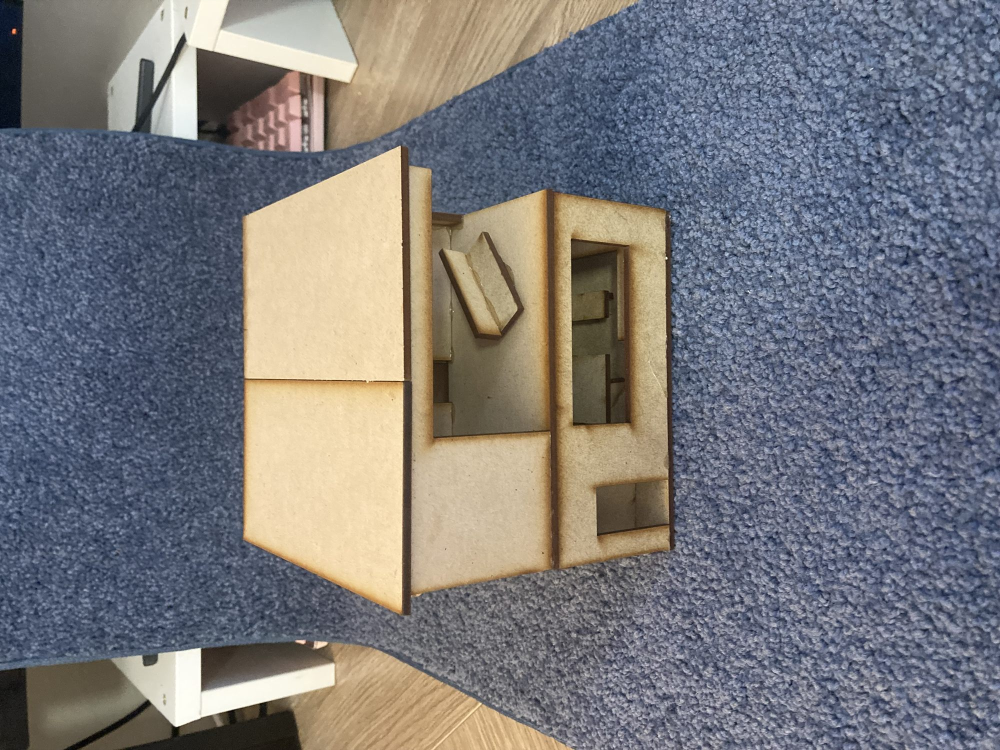
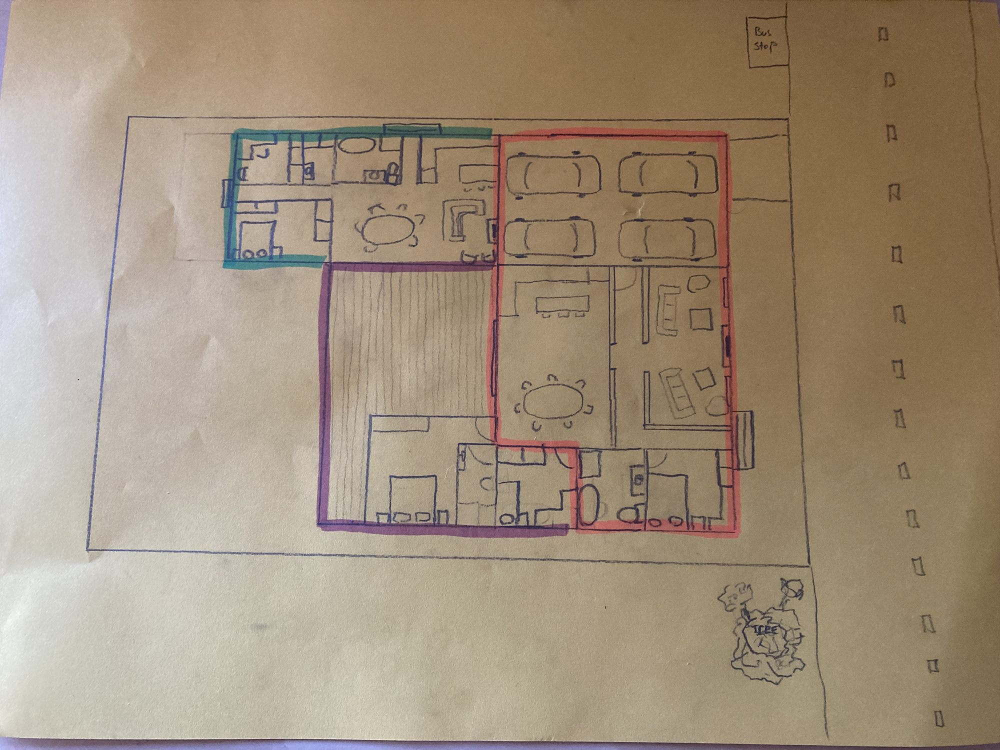
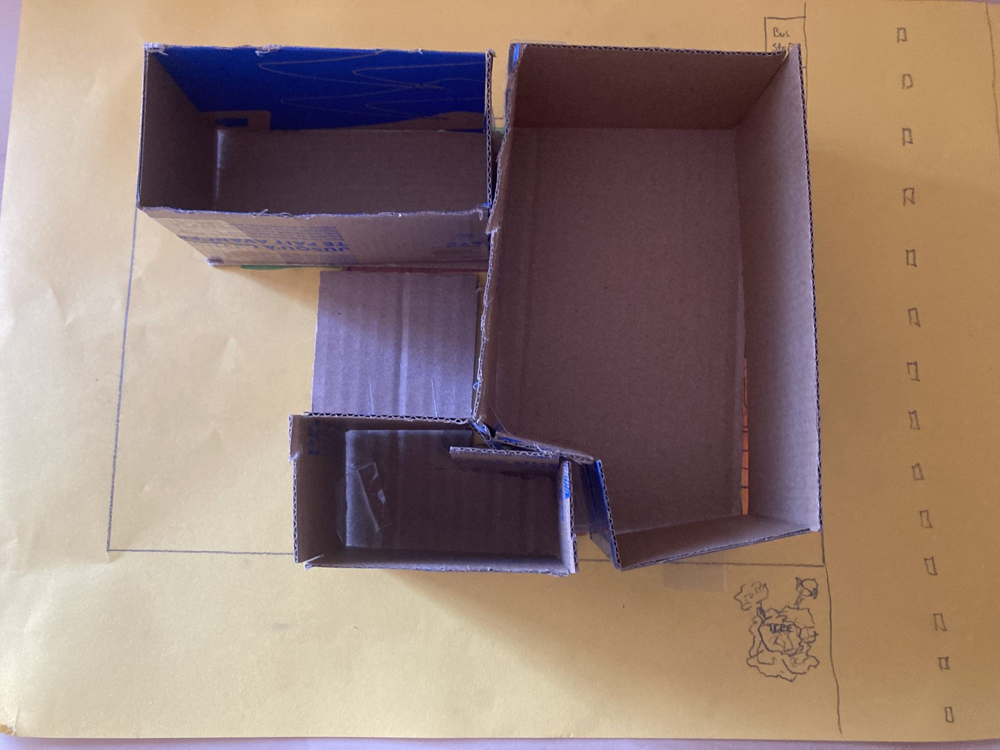
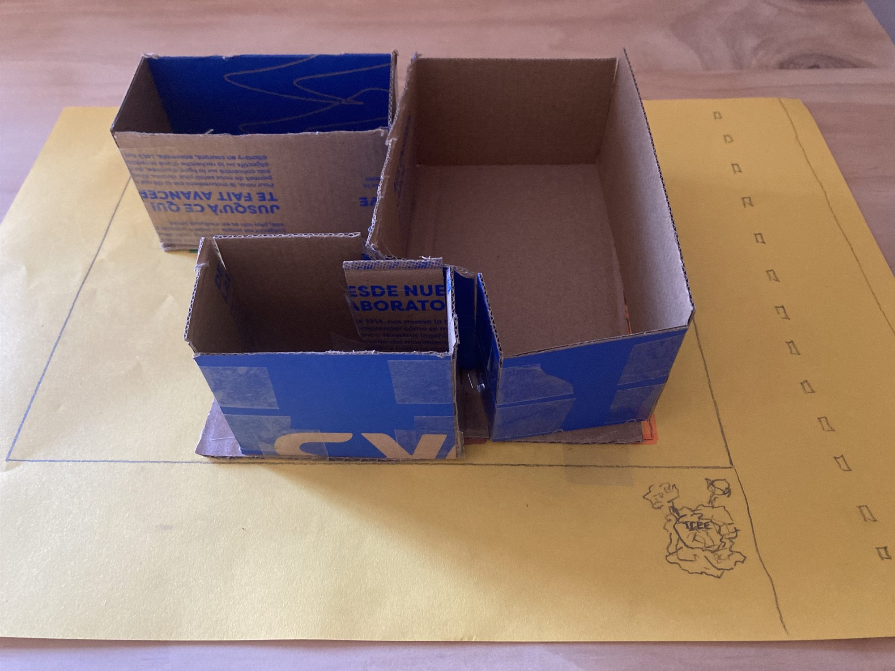
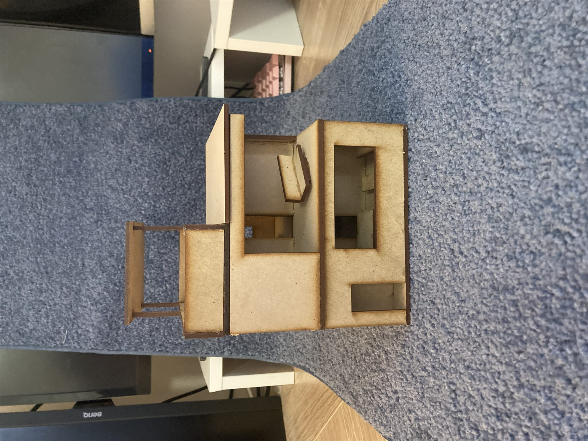
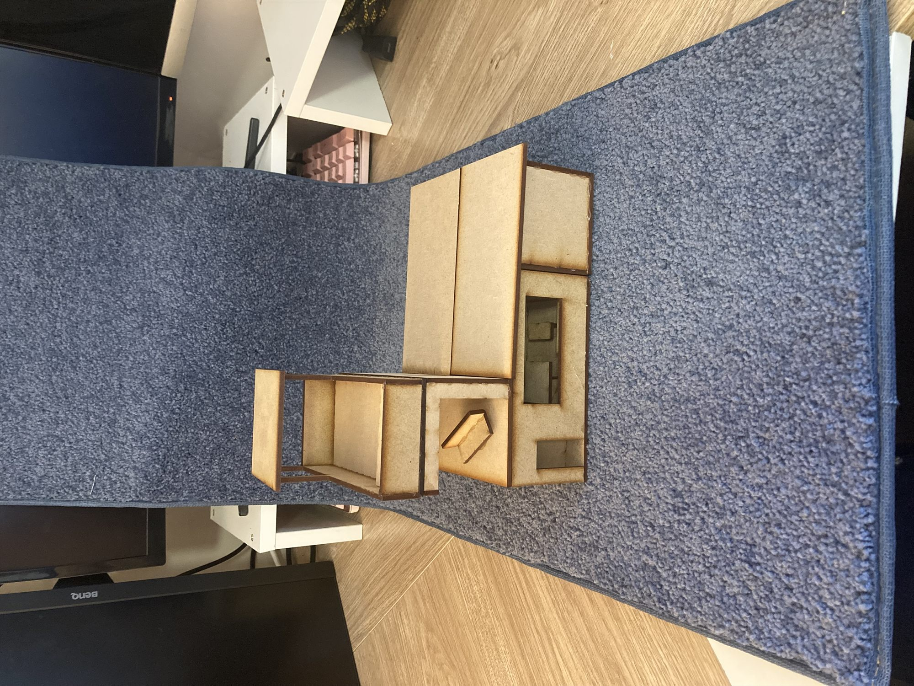
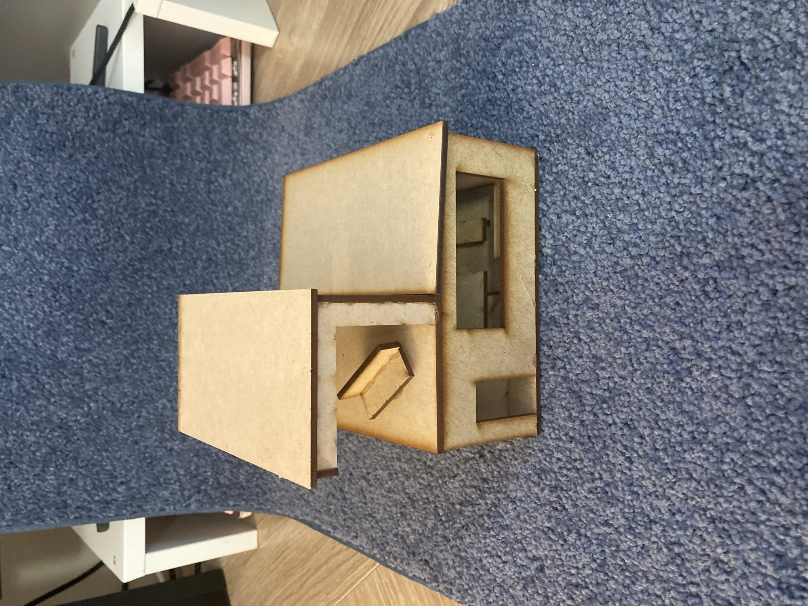
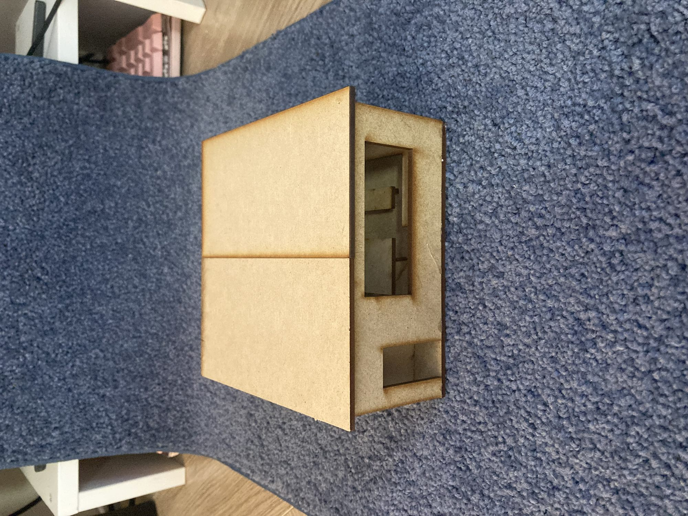
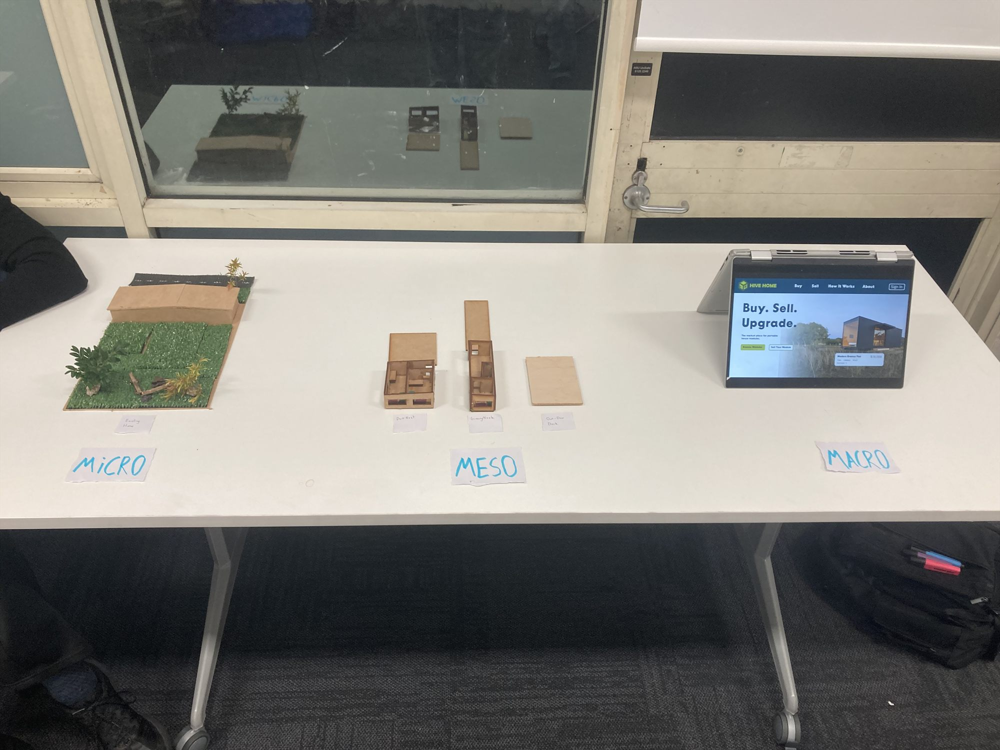

DESIGN / 04
Speculative Design: Hive Home
- WORK
- Speculative expandable modular housing system
- YEAR
- 2026
- MEDIUM
- Speculative design · Modular architecture · Concept drawings · Prototyping · Digital marketplace design
- CONTEXT
- Individual university project · ANU DESN2007 · Semester 1

Overview
Hive Home imagines housing that can grow, shrink and change with the people who live in it. Developed as a solo speculative design project, it proposes transportable, stackable housing modules that can be added, rearranged or sold as residents move through different stages of life.
The concept was created in response to a speculative future shaped by population growth, housing shortages and affordability pressures. Its aim was to challenge the idea of the home as a fixed, permanent object.
Design Brief
Develop a speculative design intervention for a possible future marked by increasing population and housing pressure. The response needed to engage with the problem at multiple scales rather than concentrating on an individual object alone.
Hive Home proposes a way to buy, grow, downsize or reorganise a home without rebuilding it entirely, with modules designed conceptually around transport on existing trucks.



Process
A previous group exercise established a speculative world facing a growing population and housing crisis. I independently developed Hive Home as a design response, exploring how housing could become more adaptable and accessible.
I developed the concept at three connected scales. At the micro scale, the individual transportable unit formed the physical building block. At the meso scale, these modules would connect or stack to let a home expand when children arrive or relatives move in, and contract as people leave. At the macro scale, a nationwide or global marketplace would make the modules easier to buy and resell.
I developed sketches, prototypes, modular housing concepts and an illustrative online marketplace interface to communicate how the system might function. The project was deliberately speculative, rather than an engineered, tested or commercially operated housing product.





Outcome
The final outcome was a speculative housing and marketplace proposal presented to my DESN2007 class. It described how a home could expand as family needs increased, then become smaller and less costly to maintain when modules were no longer required.
The project connected building design with a larger system of mobility, resale, affordability and density. While no transportable houses or marketplace platform were built, it demonstrated a way to consider housing as an adaptable service and set of objects rather than a once-only purchase.